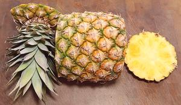
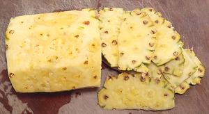
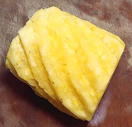
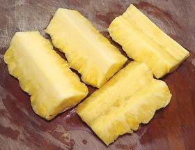
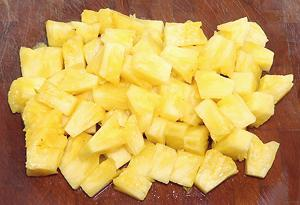

The Pineapple is the only bromeliad familiar as food in North America, or just about anywhere else. Originating in South America, they were taken throughout the tropics by the Spanish and Portuguese. Major producers are Hawaii (USA), Costa Rica, Brazil, Thailand, and Philippines. Most sold fresh in North America come from Hawaii and Costa Rica.
A large flower spike grows at the top of the plant, with about 200 flowers. Each flower produces a berry, and as the berries mature, they fuse together into the multiple fruit we call a "pineapple". Fertilization must be prevented or the pineapple will be full of seeds, a reason why humming birds are illegal in Hawaii, as they are the primary pollinator.
South American pineapples are green when ripe but some of the patented
varieties, particularly from Hawaii, are green and gold when ripe. Pineapples
sold here in Southern California weigh 3 to 5 pounds. The photo specimen, a
4-1/2 pound fruit, yielded about 2-1/2 pounds (55%) when trimmed and cored.
Chopped it's about 7-1/2 ounces per cup.
|  | Here is a 3 pound Pineapple with the top and bottom cut off. All cuts made in this series were with a razor sharp Santoku, our recommended vegetable slicing knife. | |
|  | The next step is to shave off the outside skin. Do a number of shallow cuts so you don't loose too much pineapple. | |
|  | You will still have remaining dark brown spots which are the remains of the flowers. You will notice they are in a spiral pattern (more obvious and uniform on some pineapples than others). You can cut them out with spiral trenches, but cut only as deep as needed to remove the dark brown stuff. | |
|  | Now cut the pineapple lengthwise into
quarters, 8ths (quarters cut in half lengthwise) or 12ths (quarters cut
twice lengthwise. Now you can cut away the hard central core, easiest with
8ths or 12ths.
An alternative method is to cut the pineapple in slices crosswise, and remove the core with a sharp cookie cutter or similar. For snacks, some do not remove the core, but leave it to hold the slice on a fork while biting off all around the core. This is a good plan for kids, but don't eat too much or your lips will sting. | |
|  | Here the pineapple is cut into bite size
chunks, ready for inclusion in a recipe. These chunks were cut from a
pineapple cut into 12ths lengthwise.
The photo specimen was a small (3 pound) pineapple which yielded 1 pound 3 ounces (40%). A larger pineapple will yield up to 55% for a 4-1/2 pound specimen. Cut this size, weight is about 7 ounces per cup. It would be a little more chopped into smaller pieces. |
Pineapple is very high in manganese and vitamin C, and low in just about everything else - except sugars and acid.
bl_pineapz 211113 - www.clovegarden.com